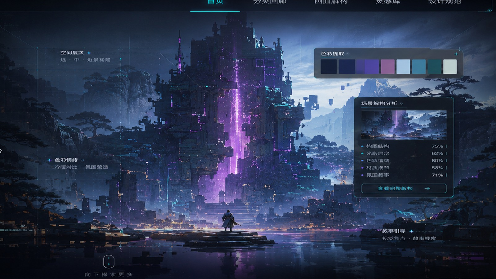

雾中城堡的尺度感
人物剪影与远景城堡形成叙事距离，冷暖光塑造史诗情绪。

从一张游戏截图进入色彩、构图、风格与叙事的多层索引，让灵感不只是收藏，而是可以被拆解、比较和复用。
首页不只展示图片，而是像一个视觉学习系统：案例、分类、测试、故事四条路径都能把用户继续带下去。
加入像素与东方水墨样本后，案例更像完整资料库：同一套解构方法可以比较不同风格的视觉语法。
人物剪影与远景城堡形成叙事距离，冷暖光塑造史诗情绪。
低分辨率色块构成层次，紫绿渐变加强梦境感。

山体虚实、雾气留白与红色建筑形成节奏。

强曝光与金色调建立末世探索感。

金属空间与神话符号并置，形成赛博东方混合风格。
用图像做索引，不再只靠文字标签。每个分类包含色彩、构图、关键词和可收藏样本。
把静态素材变成可操作的学习界面：移动鼠标查看浮动光标，点击色卡复制 HEX，切换构图层观察视觉焦点。
案例卡片悬停时产生景深推近、霓虹描边和内容上浮，增强大屏浏览的沉浸感。
点击任意色块即可复制色值，便于调研文档和概念设计配色记录。
分析图支持九宫格、中心焦点与扫描线叠加，让构图拆解更直观。
电脑端以大画廊展示，移动端自动收束为单列卡片，保证上传后浏览稳定。